8.1. 环境类
8.1.1. UBOOT的bootargs怎么设置
通过串口连接，在系统启动时，快速持续按下回车键，进入uboot，然后做如下设置：
当前启动有效
setenv bootargs ${bootargs} <items to add>
长期有效
使用extra_bootargs:
setenv extra_bootargs <itmes to add>;
saveenv
使用custom_bootargs:
setenv custem_bootargs true;
setenv bootargs <customized bootargs>;
saveenv
8.1.2. 如何用fastboot命令行烧录系统镜像
X3开发板进入fastboot模式，板子在uboot下输入：
fastboot 0
或者开发板正常启动后，进入到shell下输入：
reboot fastboot
在PC上烧录系统镜像，拷贝要烧录的系统disk.img到对应目录，在PC端输入
fastboot flash 0x0 disk.img # 整体镜像烧录
fastboot flash uboot uboot.img # 烧录uboot分区
fastboot flash boot boot.img # 烧录boot分区
fastboot flash system system.img # 烧录system分区
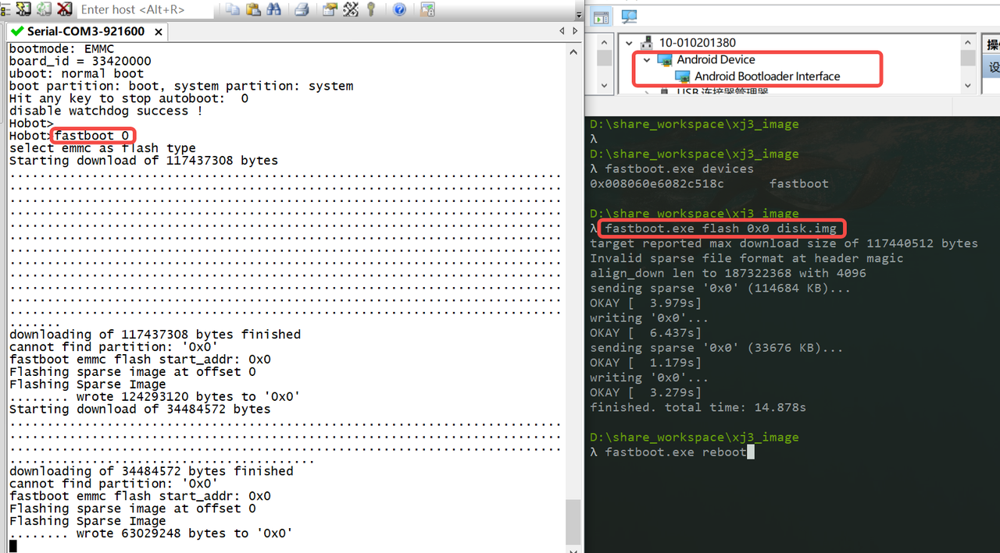
8.1.3. 如何在根文件系统修改文件
需要给根文件系统添加读写权限
mount -o rw, remount /
8.2. 系统类
8.2.1. PowerOff 命令会关闭哪些电
poweroff 会去拉en_vdd_core_pd的pin，就看每个项目上，这根pin能控制哪几路电了。按道理需要把group3和group4的电断掉
8.2.2. 如何查看ddr带宽统计
hrut_ddr -t all -p 1000
8.2.3. 如何设置ip且重启后有效
hrut_ipfull s 192.168.1.10 255.255.255.0 192.168.1.1
8.2.4. 如何查看cpu bpu信息统计
hrut_somstatus -n 1000
8.2.5. 如何读取芯片uid命令
cat /sys/class/socinfo/soc_uid
8.2.6. 如何查看bpu支持的频率
cat /sys/class/devfreq/devfreq1/available_frequencies
8.2.7. 如何查看cpu频率模式
cat /sys/devices/system/cpu/cpufreq/policy0/scaling_governor
8.2.8. 如何查看cpu降频温度
cat /sys/devices/virtual/thermal/thermal_zone0/trip_point_1_temp
8.2.9. 关闭cpu核的方法
echo 0 > /sys/devices/system/cpu/cpu2/online
echo 0 > /sys/devices/system/cpu/cpu3/online
8.2.10. 中断绑定cpu核方法
echo 8 > /proc/irq/175/smp_affinity绑定核到core3，echo后的8对应core3，1/2/4/8分别对应core0-3，175是中断号
8.2.11. PWM、LWPM频率范围和开启方法
PWM的时钟，默认支持频率范围是192MHz 到46.8KHz,LPWM的时钟，支持频率范围是24.4Hz ~100KHz.
开启pwm可以用如下echo命令
for i in 0 3
do
cd /sys/class/pwm/pwmchip${i}
echo 0 > export
echo 1 > export
echo 2 > export
cd pwm0
echo 10000 > period
echo 3000 > duty_cycle
echo 1 > enable
cd ../pwm1
echo 10000 > period
echo 1000 > duty_cycle
echo 1 > enable
cd ../pwm2
echo 10000 > period
echo 1000 > duty_cycle
echo 1 > enable
done
注意lpwm开启后还需要输入
echo 1 > /sys/devices/platform/soc/a5018000.lpwm/lpwm_swtrig
8.2.12. MCLK时钟分频
X3的MCLK时钟分频由vio（可选）内部分两级，输出频率如下： 分频源 源频率 一级分频 二级分频 输出频率 vio2_pllmux 2376M 1~32 (默认16) 1~8 (默认4) 9.28M~ (默认37.125M) vio_pllmux 1632M 1~32 1~8 6.375M~ 注: 一级分频为4路共用，因此使用时最好输出同一频率，否则需注意会否冲突！ 默认未使能为SENSOR_MCLK输出功能，该PIN可用于普通GPIO，使能后方可输出 所以如果要保持sensor0_mclk输出37.125M, sensor1_mclk配一个接近24M的时钟如下： 2376 / 16 = 148.5 – 一级分频(共用) 148.5 / 4 = 37.125 –sensor0_mclk 148.5 / 6 = 24.75 –sensor1_mclk 以上频率都是内部有做自动的换算，使用者只需要填入一级分频/二级分频能分的出来的频率，如果分不出来内部会分一个最接近的
8.2.13. EMMC烧录器文件
emmc的空片烧录，ycoto的linux和ubuntu的系统都可以直接使用disk.img文件，这个文件就是个二进制文件，可以用烧录器直接烧写到emmc（注意空片烧录需要完整得烧录一次disk.img才能单独烧录uboot.img等分区）
如果是批量生产，建议先烧录后贴片：
1）烧录的时候首先确认工厂烧录器支持emmc型号，就可以直接烧录。
2）如果烧录器不支持，但是可以支持相同封装的，则可以让烧录器厂家把emmc型号添加进去。
3）如果此类封装emmc的烧录器都不支持，则可以找专门的第三方烧录厂。
4）烧录界面的配置，可以咨询烧录器厂家，不同的烧录器有些差别。
8.2.14. VIO时钟自适应开关
vio模块以ko加载方式
把echo 1 > /sys/module/hobot_dev_ips/parameters/clk_en增加到/etc/init.d/load.sh的安装ko之前
vio模块直接编译到内核
在uboot cmdline中传入hobot_dev_ips.clk_en=1
注意vio时钟默认是全开的，如果不使用vio模块降功耗可以打开自适应开关关闭，能节省功耗。
8.2.15. 音频Bclk、Rclk关系
Bclk是根据应用层传进来的采样率(Rclk)和dts里面配置的slot_width动态计算出来的，Bclk=Rclk*slot_width
8.2.16. ion大小查看命令，uboot下修改命令，dts修改ion大小
memstat可以查看ion总大小 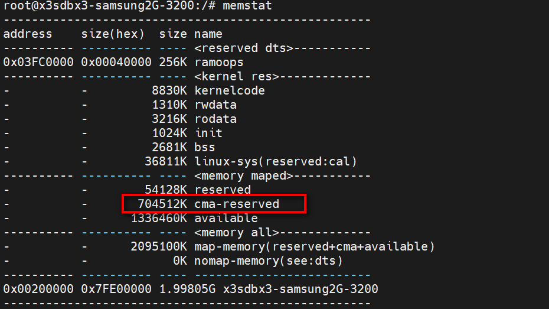
cat /sys/kernel/debug/ion/heaps/ion_cma可以查看当前ion使用大小 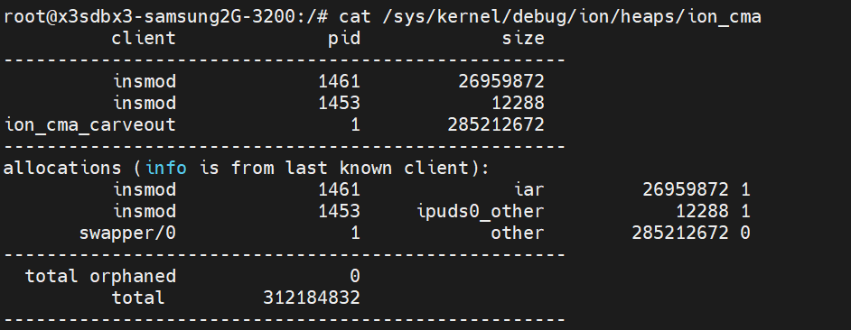
在uboot下面使用如下命令可以修改ion大小到1G setenv ion_size ‘1024’ saveenv
修改如下截图的dts圈红部分可以修改ion大小
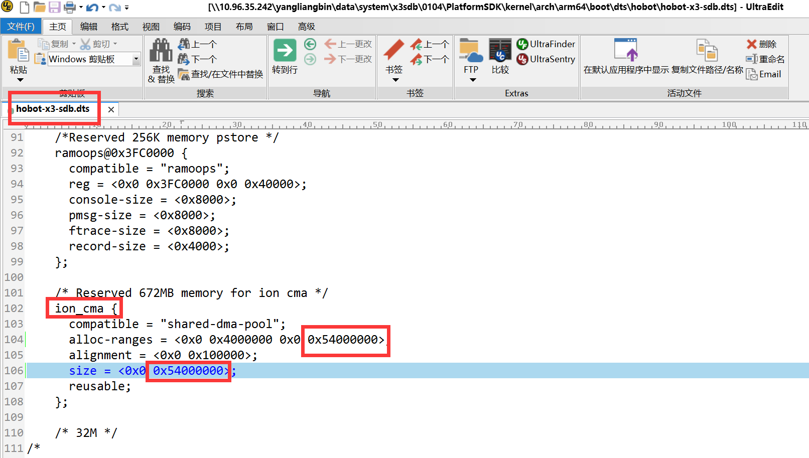
注意：ion最大只能分出1.7G，因为低2G区域是留给dma使用的，dma无法用高2G，在低2G中，还需要预留300M左右给系统使用，所以ion只能分出1.7G。
8.2.17. X3 usb规格相关
usb endpoint端点加上ep0总共9个，4对半，除去ep0 7个, 3对半
端点的max packet size大小 ep0in/out 512bytes 其余端点都可以1024 ~ 1032bytes
In 最多6个，Out没限制，是可以配置的，如下几种组合：
6 In + 3 Out
5 In + 4 Out
4 In + 5 Out
3 In + 6 Out
2 In + 7 Out
1 In + 8 Out
目前没做灵活的配置, 修改代码重新初始化
drivers/usb/dwc3/gadget.c
dwc3_gadget_init_endpoints
8.2.18. usb支持传输模式
usb isoc - 等时,bulk - 批量都支持
usb2.0的最大传输带宽为480Mbps（即60MB/s，x3实际虚拟U盘测试大概是 42~44MBps），usb2.0 bulk传输 大概是42MBps的带宽.
usb2.0 isoc传输 是24MBps的带宽.
usb3.0虚拟磁盘测 373MBps
usb3.0 isoc模式就220MBps左右带宽
usb3.0 bulk 模式375MBps左右
8.2.19. X3 usb host和device切换命令
usb host改成usb device命令
echo device > /sys/devices/platform/soc/b2000000.usb/b2000000.dwc3/role
echo soc:usb-id > /sys/bus/platform/drivers/extcon-usb-gpio/unbind
usb device改成host命令
echo host > /sys/devices/platform/soc/b2000000.usb/b2000000.dwc3/role
8.2.20. 如何查看和修改系统寄存器
使用devmem命令可以直接访问物理地址读写寄存器，常规用法：
devmem ADDRESS [WIDTH [VALUE]]
8.2.21. i2c命令使用
i2cdetect -l
#用来列举I2C bus和上面所有的设备
i2cdetect -y -r 1
#可以用來差看bus 1上有哪些地址挂载
i2ctransfer -f -y 1 w3@0x36 0x50 0x81 0x01
#0x36为I2C设备的地址, 0x5081为要写的寄存器地址, 0x01为写入的值。
i2ctransfer -f -y 1 w2@0x36 0x30 0x0A r3
#0x36为I2C设备的地址, 0x300A为要读的寄存器地址, r3为连续读3Byte, 0x56 0x08 0x41 为读到的寄存器的值。
8.2.22. X3查看i2s时钟状态
devmem 0xa1000350 （读取i2s0的状态信息，bit20 读到的值是1，表示时钟是disable的状态）
devmem 0xa1000360 （读取i2s1的状态信息，bit20 读到的值是1，表示时钟是disable的状态）
8.2.23. X3 ddr和emmc压测命令
测试ddr
echo 4 > /proc/sys/vm/drop_caches
/app/bin/stressapptest -s 172800 -M 100 -f /tmp/sat.io1 -f /tmp/sat.io2 -i 4 -m 8 -C 2 -W > /userdata/ddr.log &
测试emmc性能
/app/bin/iozone -e -I -a -r 4K -r 16K -r 64K -r 256K -r 1M -r 4M -r 16M -s 16K -s 1M -s 16M -s 128M -s 1G -f /userdata/iozone -Rb /userdata/test_iozone_emmc_ext4.xls
8.2.24. 如何使用uart工具手动一步一步烧写固件
有时使用hbupdate工具升级失败，通过手动uart烧录来获取更多信息，判断错误点，手动uart烧写步骤：
在SDK包的 software_tools/update_tools 目录下找到 entry_uart.py
设备串口和电脑连接起来，设备保持下电
通过SecureCRT连接设备串口，将附件entry_uart.py脚本通过serial中script的run选项选中该脚本，开始运行
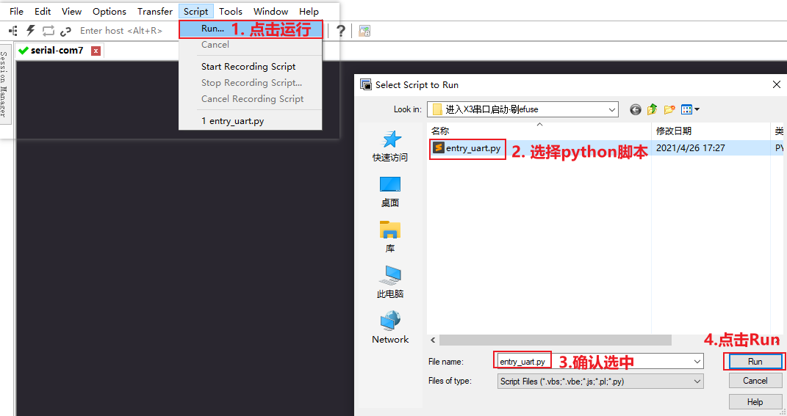
运行脚本后，立即将开发板上电，上电后即可进入串口下载模式，在’ C’未打印结束（大概3分钟）时选择Transfer 中’Send Xmodem’模式进行spl固件的下载，可在hbupdate工具中查找，如hbupdate\data\board_config\xj3-key1\boot_config\boot_file\boot_config\spl-uart-secure.bin。
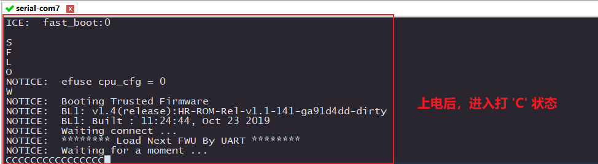
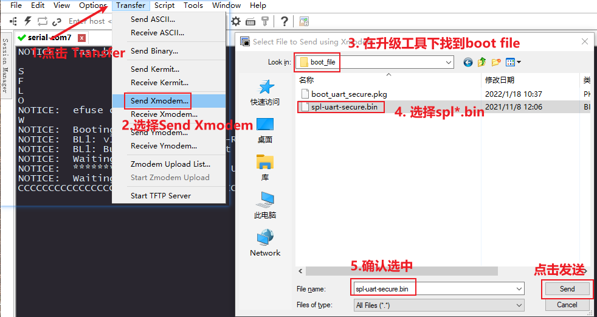
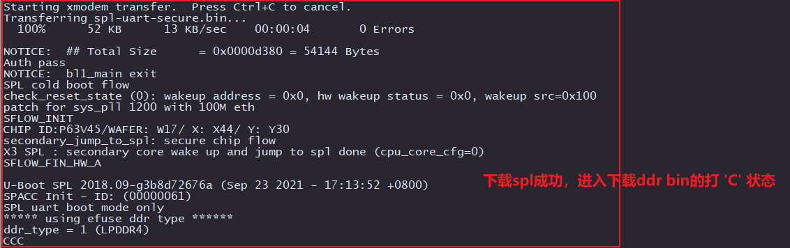
加载并运行完SPL后，自动进入上传加载ddr bin文件的程序，通过serial工具中transfer中的’ Send Ymodem’模式进行上传bin文件，选择正确的bin文件（如update/data/xj3-ddr/SAMSUNG-LPDDR4-3200-110-ddr.bin）。
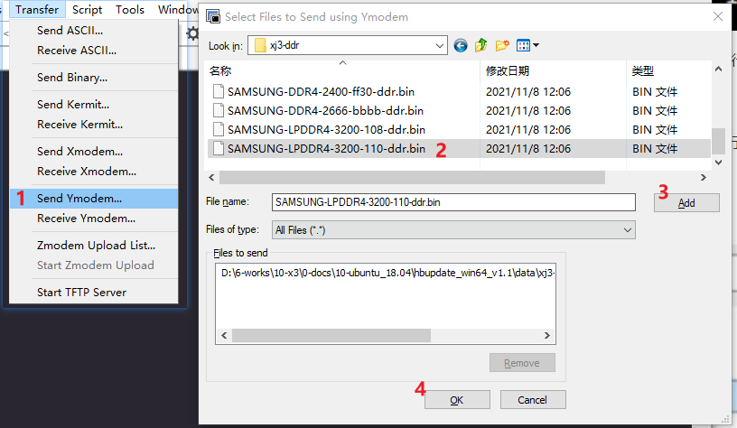
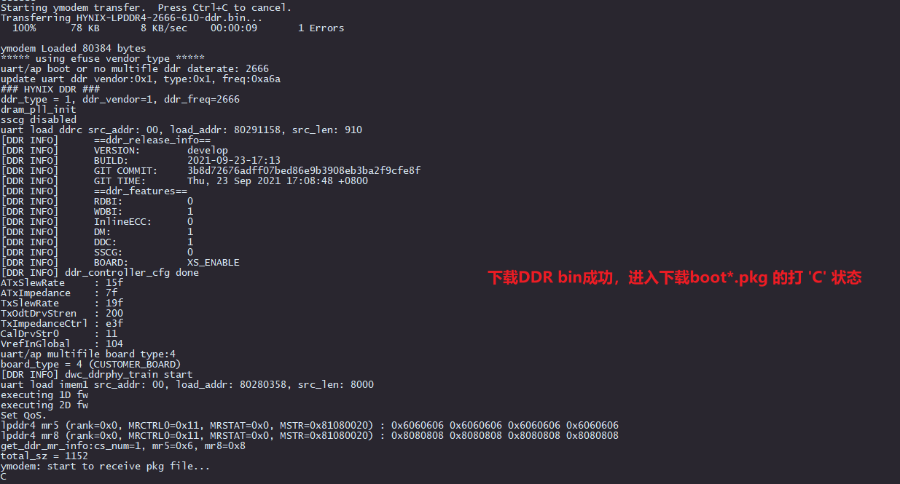
加载完ddr bin后，自动进入上传加载boot pkg文件程序，通过serial工具中transfer中的’ send Ymodem’模式进行上传boot*.pkg文件，选择正确的pkg文件（如果没有该文件可在hbupdate工具与spl同目录下选择正确的pkg文件）。
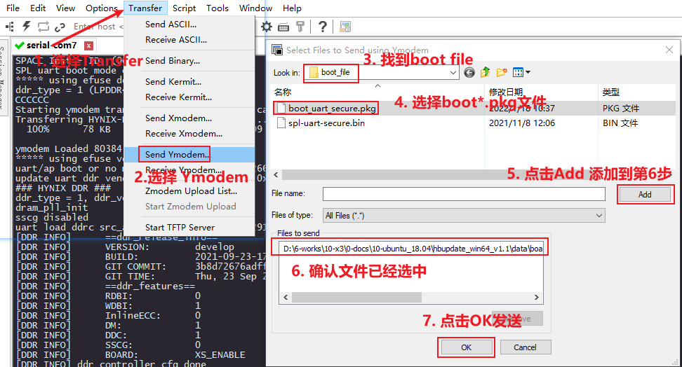
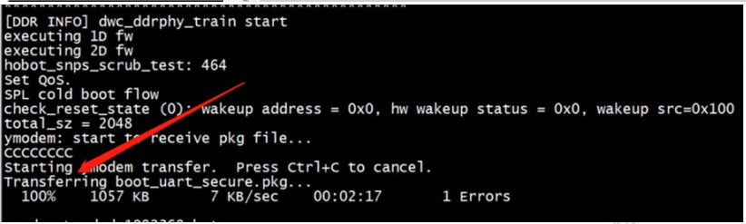
正常加载后设备进入uboot ，后续可通过fastboot烧录或手动tftp将镜像上传烧录。
8.3. 视频处理
8.3.1. Version_0807版本SDK QOS配置方法
devmem 0xa1000044 32 0x1010 //pll
devmem 0xa1000144 32 0x11 //sif mclk
devmem 0xa4000038 32 0x10100000 //axibus_ctrl
devmem 0xA2D10000 32 0x04032211 //read_qos_ctrl
devmem 0xA2D10004 32 0x04032211 //write_qos_ctrl
8.3.2. 如何打开VIO各模块主要日志
echo "file vio_group_api.c +p" >/sys/kernel/debug/dynamic_debug/control
echo "file acamera.c +p" > /sys/kernel/debug/dynamic_debug/control
echo "file hobot_dev_sif.c +p" > /sys/kernel/debug/dynamic_debug/control
echo "file hobot_dev_ipu.c +p" >/sys/kernel/debug/dynamic_debug/control
echo "file hobot_dev_pym.c +p" >/sys/kernel/debug/dynamic_debug/control
echo "file system_dwe_api.c +p" >/sys/kernel/debug/dynamic_debug/control
echo "file dwe_subdev.c +p" > /sys/kernel/debug/dynamic_debug/control
8.3.3. 如何打开VIO各模块中断日志
echo "func sif_isr +p" >/sys/kernel/debug/dynamic_debug/control
echo "func acamera_interrupt_handler +p" >/sys/kernel/debug/dynamic_debug/control
echo "func x3_ldc_irq +p" >/sys/kernel/debug/dynamic_debug/control
echo "func ipu_isr +p" >/sys/kernel/debug/dynamic_debug/control
echo "func pym_isr +p" >/sys/kernel/debug/dynamic_debug/control
8.3.4. X3查看sif,isp,ipu,pym,vpu等帧率命令
cat /sys/devices/platform/soc/a4042000.pym/fps （查看pym帧率）
cat /sys/devices/platform/soc/b3000000.isp/fps （查看isp帧率）
cat /sys/devices/platform/soc/a4001000.sif/fps （查看sif帧率）
cat /sys/devices/platform/soc/a4040000.ipu/fps （查看ipu帧率）
cat /sys/devices/platform/soc/a8000000.vpu/fps （查看vpu帧率）
cat /sys/devices/platform/soc/a4010000.gdc0/fps （查看gdc帧率）
8.3.5. 如何查看VIO各模块中断状态
cat /proc/interrupts | egrep "sif|isp|ipu|gdc"
8.4. 编解码类
8.4.1. 视频码流头部信息不正确报错
[ERROR][MM][src/vdi/linux/vdi_osal.c:174] [ERROR][869.56942][3344:3543][VideoDecoder] DecodeHeader:1554 FAILED TO DEC_PIC_HDR: ret(1), SEQERR(00005000) [ERROR][MM][src/vdi/linux/vdi_osal.c:174] [ERROR][869.56980][3344:3543][COMPONENT] Component wave_decoder will be terminated
需要输入给解码模块的码流的第一个帧，给sps，pps，idr，如果只给sps，就会报如上错误。
8.5. 外设类
8.5.1. 如何判断sensor硬件连接是否正常
使能mclk
echo 1 > /sys/class/vps/mipi_host1/param/snrclk_en
echo 24000000 > /sys/class/vps/mipi_host1/param/snrclk_freq
echo 1 > /sys/class/vps/mipi_host0/param/snrclk_en
echo 24000000 > /sys/class/vps/mipi_host0/param/snrclk_freq
在sdb开发板上，使用 i2cdetect -r -y 2 探测，探测到的地址 40 是 F37, 1a 是 imx415
8.5.2. ETH phy寄存器读取方法
uboot下可以直接使用mii命令，例如
mii dump
mii read
kernel读取phy寄存器方法
cat /sys/class/net/eth0/phy_reg/phy_reg
然后使用dmesg，即可读取部分phy寄存器
8.6. 硬件类
8.6.1. TF卡接口
X3 SDB提供一路TF Card接口，硬件设计上IO接口电平固定为3V3，因此无法支持TF 1.8V高速传输模式。
8.6.2. X3 电源上电斜率要求
X3 对上电斜率有要求，硬件需要实际进行测试。具体要求见Hardware-Design Guide中 1.1.4 Power-On and Power-OFF sequences 表格中的MAX Ramp Rate。当实际硬件测试不满足设计时，可以加MOS软启动电路进行解决。
8.6.3. X3 上掉电时序要求
X3对上掉电时序要求参考Hardware-Design Guide中 1.1.4 Power-On and Power-OFF sequences 掉电时序不能满足设计要求的话，可以不做控制。时序中需要特别注意如下问题： DDR对上掉电时序是由要求的，不符合要求会导致DDR异常，设计需要将DDR的时序考虑在内 LPDDR4的时序要求：VDD_1V8先于VDD_DDR_1V1上电，VDD_DDR_1V1先于VDD_1V8掉电（详细见DDR的规格书）
8.6.4. LPDDR4&DDR4选型优缺点，更推荐使用LPDDR4
DDR4的方案需要用两颗，成本会有一定优化，优化空间不是很大。
LPDDR4的带宽比较有优势能支持3200Mbs。DDR4基本支持2666Mbs以下。
从容量设计角度LPDDR4可以支持pin2pin替代，增加了设计冗余。
8.6.5. USB ID：硬件配置USB主从模式
引脚号AA13 USB_ID芯片端已NC，此引脚NC不连接。硬件引脚已变更为引脚号C12 SD0_WPROT SD0_WPROT上拉4.7K至1V8 X3做device，下拉4.7K至地 X3做host。
8.6.6. USB_VBUS引脚，插拔检测
引脚号 Y14 USB_VBUS 芯片端已NC，此引脚NC不连接。需要另取一个IO脚做USB_VBUS的检测。
X3 USB做host时，不需要USB_VBUS检测，支持热拔插。
X3 USB做device时，需要增加一个IO做USB_VBUS检测，已支持热拔插。
8.6.7. UART串口数量少
可以通过spi转uart的方式扩展。
8.6.8. 最小系统整体运行、待机功耗测试
deepsleep场景下， X3功耗能控制在74mW以内。
静态场景下，在kernel启动时，X3功耗在800mW。
8.6.9. X3 ADC引脚数目
目前仅有一个，如需要多个ADC引脚，需增加外设芯片。
8.7. 工具类
8.7.1. 升级失败-No space left on device
报错信息： “ No space left on device”
解决方法：请检查安装升级工具的分区磁盘空间是否不足
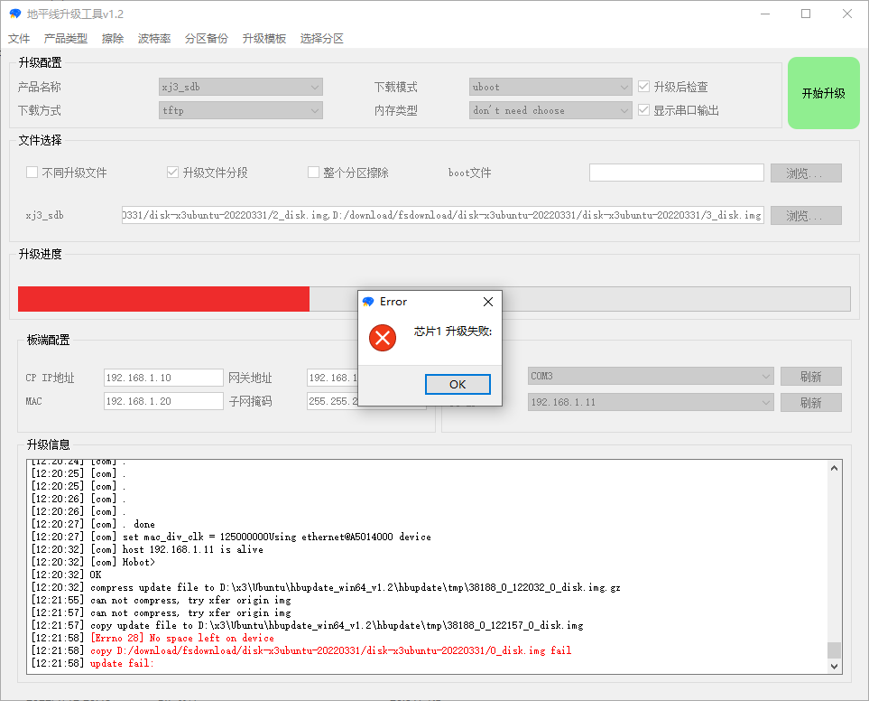
8.7.2. 升级失败-芯片串口被占用
报错信息：如图所示。
解决方法：检查是否有其他程序（MobaXterm、SecureCRT、XShell等软件）已经打开了串口，请关闭掉他们的连接。
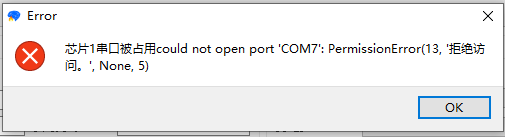